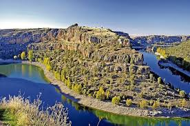

Esta ruta en moto es sin duda una de las mejores que podemos hacer dentro de Castilla y León. Con poco más de 300 kilómetros, esta ruta que se extiende por la provincia de Segovia, empieza en un pequeño pueblo llamado Valsaín, a unos 14 kilómetros de Segovia. Este recorrido suele incluir las carreteras CL-601, N-110, SG-V-2321, SG-V-2411, SG-241, SG-232 y SG-233. El itinerario puede incluir un recorrido por la ciudad de Segovia, una visita a La Granja, Sepúlveda, Carrascal del Río y Burgomillodo desde donde se puede visitar la ermita de San Frutos y, por supuesto, el Parque Natural Hoces del Río Duratón.
